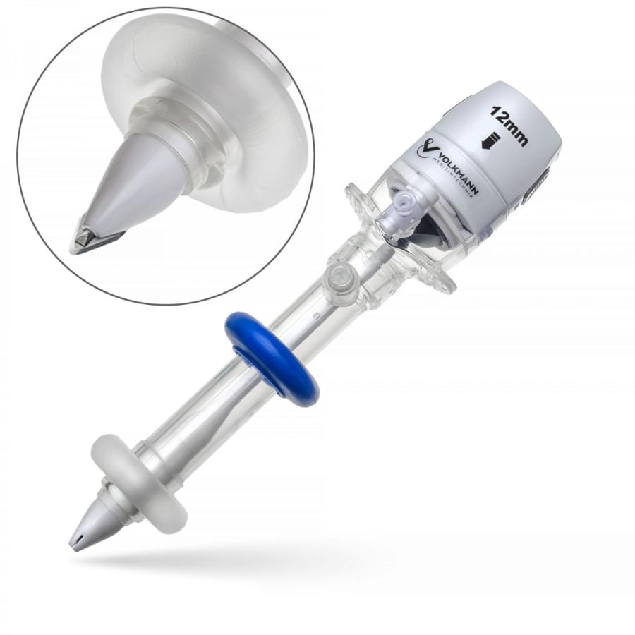
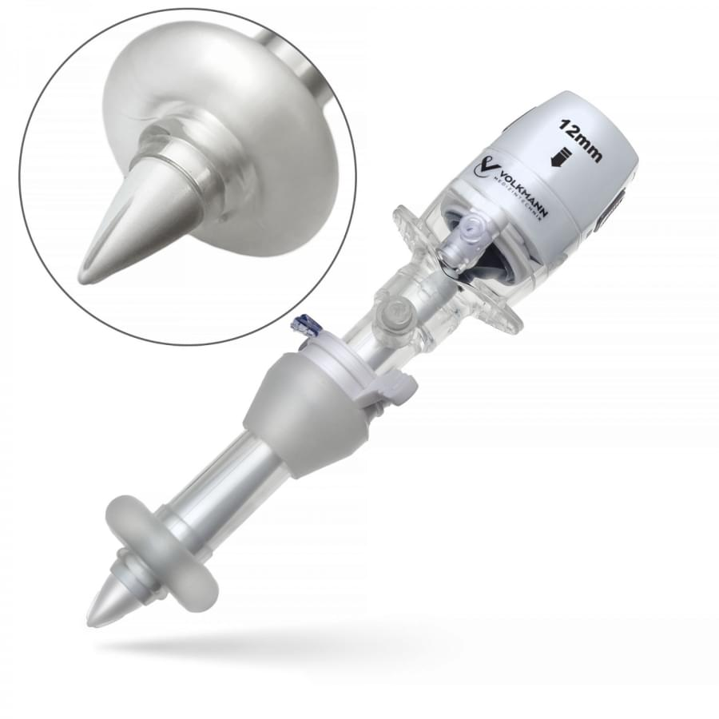

- Канюля — полая конструкция, часто имеет насечки или ребра для сцепления с тканями, используется для ввода различных эндоскопических инструментов, создавая рабочий канал.
- Кран для подачи углекислого газа — кран расположен на канюле, именно через него подключается к системам инсуфляторов (подачи газа) или системам десуффляции для удаления дыма, паров и нейтрализации запахов из операционного поля, возникающих при применении электрохирургических аппаратов.
- Стилет (обтуратор) – неотъемлемая часть конструкции троакара для проникновения в тело пациента через кожные покровы. Кончик стилета может быть различных модификаций: с прозрачным кончиком (оптический), с лезвием, без лезвия, тупоконечный (Хассона).
- Абсорбирующая поверхность — некоторые виды троакаров могут иметь специальную поверхность во внутренней части крышки канюли, её функция заключается в абсорбции сгустков крови и других частиц, исключая загрязнение троакара во время погружения и смены инструментария.
- Система мембран (клапаны) – двухстворчатая и лепестковая силиконовая система мембран, которая обеспечивает герметичность, предотвращает утечку углекислого газа из брюшной полости в ходе лапароскопических операций, особенно при извлечении и замене инструментов из канюли. Также обеспечивает центровку используемого инструментария. Мембрана имеет возможность ручного открытия, при помощи кнопок на крышке канюли, что, в свою очередь, исключает риск её повреждения при извлечении изделий с острой рабочей поверхностью. Стоит отметить, что в торакоскопических операциях используются троакары без клапанов, так как при выполнении торакоскопии нет необходимости в создании избыточного давления в полости.
- Система фиксации — данный элемент конструкции свойствен для баллонного типа троакара. Система состоит из баллона и кольца/гель-анкера, которые создают дополнительную надёжную фиксацию и дополнительную герметизацию троакарной раны. Отмечается, что при использовании баллонных троакаров послеоперационные раны более аккуратные, равномерные и быстрее заживают. Немаловажно, что их использование в разы облегчает работу хирурга из-за отсутствия необходимости в дополнительной фиксации, даже при длительных операциях или при использовании тяжёлых конструкций инструментов, погружаемых в троакар.


Именно наличие баллона определило особое применение баллонных троакаров при канцероматозе брюшины*, где важно сохранять надёжную герметизацию при аэрозольной терапии в абдоминальной области [2].
Троакары можно классифицировать на несколько групп по различным характеристикам
По кратности применения:
троакары одноразовые;
троакары многоразовые.
В последнее время одноразовые троакары стали популярными во многих странах мира, это связано со снижением затрат на производство. Основное преимущество одноразового троакара заключается в том, что конец троакара всегда острый; следовательно, для введения троакара требуется меньше усилий [1].
По области применения:
троакары лапароскопические;
троакары торакальные.
О главном отличии лапароскопических троакаров от торакальных рассказано ранее в статье «Малоинвазивная хирургия — новый этап развития медицины».
По типу канюли:
троакар винтовой — на канюле имеется винтовая резьба, которая фиксирует троакар в покровных тканях. Троакар вкручивается в ткани при установке и выкручивается при извлечении из тканей;
троакар с гладкой канюлей — в данном виде канюля не имеет резьбу.
По типу исполнения конца:
Существуют разные типы концов, каждый из них имеет свой особый функционал: с лезвием, без лезвия, оптический и тупоконечный конец.
Подробнее о функционале каждого конца читайте в статье «Малоинвазивная хирургия — новый этап развития медицины».
* Канцероматоз брюшины − вторичное злокачественное поражение оболочки, выстилающей стенки брюшной полости и покрывающей внутренние органы изнутри.